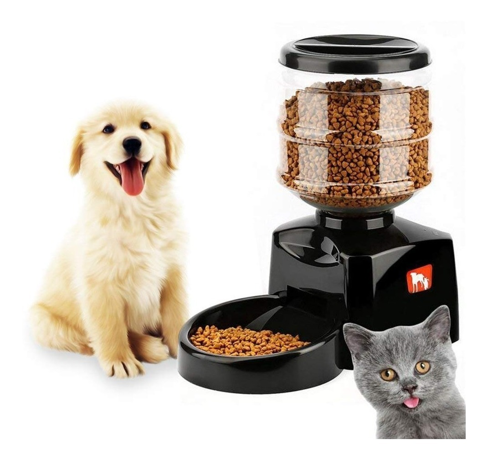

📊 Historial de Alimentación
Consulta cuándo y cuánta comida ha sido dispensada en los últimos días.
- 27 Enero - 08:00 AM - 50g
- 26 Enero - 08:00 AM - 50g
- 25 Enero - 08:00 AM - 50g
- 24 Enero - 08:00 AM - 50g
Consulta cuándo y cuánta comida ha sido dispensada en los últimos días.